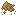

养蜂参考
养蜂参考
本章是养蜂章节的延续。
蜂箱的蜂王拥有某些性状。这些性状在蜂群分裂时会传递并可能改变。新的性状通常只能从野生蜜蜂中获得，除了「冷静度」这一性状，它在人工饲养下的分蜂过程中有一定几率出现。
性状列表
- 耐寒性: 使蜜蜂能在更低的温度下产蜜。每级耐寒性提供额外2°C的抗寒能力。
- 生产力: 提高蜂蜜的生产速度。
- 突变性: 增加分蜂时传递性状的变异性。
- 生育力: 增加分蜂的可能性。
- 作物亲和力: 有一定几率向附近作物传播少量营养。
- 自然亲和力: 导致蜂箱周围生成新的花卉和水生植物。
- 冷静度: 降低蜜蜂攻击你的可能性。
- 感染抗性: 降低患上基因病和寄生虫感染的可能性。
具有高突变性性状的蜜蜂有一定几率患上遗传病。患有遗传病的蜜蜂无法繁殖。
Bees subject to improper conditions can develop Parasitic Infections. These conditions do not have to do with their species and may spontaneously occur in wild bees. These conditions include: the hive touching any other block besides for the block below it; temperatures below -18 or above 27°C; rainfall below 50 or above 470mm. Infected bees cannot make honey.
蜜蜂物种
蜜蜂物种存在于不同的气候中，它们的生成条件描述了从野生蜂巢或吸引到的野生蜂群中可能得到什么。有些物种比其他物种更稀有。
- 西方蜜蜂: 冷静度，生产力。5-20°C，100-400毫米。极其常见。当没有其他蜜蜂物种符合生成条件时，西方蜜蜂也会生成。
- 东方蜜蜂: 生育力，自然亲和力。10-30°C，250-400毫米。常见。
- 大蜂: 生育力。15-30°C，300-450毫米。常见。
- 小蜜蜂: 生育力，生产力。20-30°C，300-400毫米。常见。
- 黑小蜜蜂: 突变性，自然亲和力。12-22°C，150-350毫米。不常见。
- 柯氏蜜蜂: 耐寒性，生产力，自然亲和力。12-16°C，200-375毫米。非常稀有。
- 喜马拉雅大蜜蜂: 耐寒性，突变性，生产力。10-19°C，150-250毫米，y>96。稀有。
- 菲律宾蜜蜂: 冷静度，作物亲和力。15-20°C，350-450毫米。非常稀有。
- 婆罗洲山蜜蜂: 耐寒性，感染抗性。13-22°C，150-400毫米，y>96。常见。
- 印度尼西亚大蜜蜂: 自然亲和力，生育力，感染抗性。16-20°C，350-420毫米。不常见。
- 非洲化蜜蜂: 耐寒性。10-25°C，100-320毫米。常见。


